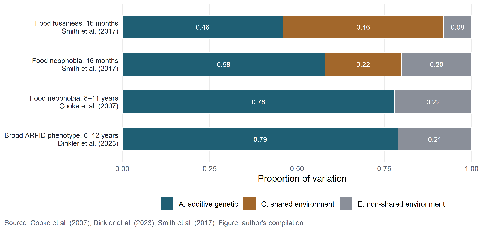

3 Seed and soil: genetic and environmental determinants
TipIn plain words
Twin studies suggest that ARFID, and the fussy eating that sometimes comes before it, runs strongly in families, largely through genes. That does not mean it is fixed, or that nothing around a child matters. Genes shape how sensitive a child is to tastes and textures, how strong their appetite is and how easily they become frightened. Experiences such as a choking episode, an illness or tense mealtimes can then start the problem or keep it going. Treatments that change those experiences can help, which is the best evidence that the environment matters.
The title of this book promises an account of the environmental factors in feeding and eating disorders. The most robust single finding about the causes of ARFID seems, at first sight, to undercut that promise: in the largest twin study to date, about four-fifths of the variation in liability to ARFID was attributable to genetic differences (Dinkler et al., 2023). A reader might reasonably ask what is left for the environment to explain.
This chapter argues that the question rests on a misunderstanding, and that clearing it up is the most useful thing a book about environments can do. Heritability is a statement about the sources of variation in a population under a given range of conditions. It is not a statement about how much of any one child’s difficulty is “in the genes”, and it says nothing about whether changing the environment would change the outcome. The gardener’s image captures the point: the seed shapes what kind of plant can grow, but soil, water and weather decide whether, when and how it does, and a gardener who knows that most of the variation in a field is due to seed has learnt nothing about what to do for one plant.
The chapter proceeds in eight steps. Section 3.1 explains what twin studies of ARFID and related traits have found and what they cannot show. Section 3.2 turns to molecular genetics. Section 3.3, Section 3.4, Section 3.5 and Section 3.6 examine four layers of environment for which there is evidence: the developmental, the familial, the bodily and the social. Section 3.7 asks what treatment trials reveal about environmental levers, and Section 3.8 draws the evidence together in a working model that prepares the ground for the discussion of digital environments in Chapter 4.
3.1 What heritability does and does not mean
What twin studies estimate
Twin studies compare identical twins, who share all their genes, with non-identical twins, who share on average half of the genetic variants that differ between people. If identical twins resemble each other more closely than non-identical twins, the excess similarity is attributed to genes. The variation in a trait is then partitioned into three components: additive genetic influences (A, whose share is the heritability), environmental influences shared by siblings growing up in the same family (C) and environmental influences unique to each individual (E), a component that also absorbs measurement error.
The Swedish twin study introduced in Chapter 1 applied this design to 16,951 twin pairs. Drawing on parent reports at ages 9 or 12 together with patient and prescription registers, it identified a broad ARFID phenotype in 2.0% of children aged 6–12. The heritability of ARFID was 0.79 (95% CI 0.70–0.85), and the remaining variation was attributed to non-shared environmental factors (0.21; 95% CI 0.15–0.30). The estimates barely changed when children with autism or with medical illnesses that could account for the restriction were excluded (Dinkler et al., 2023). One limitation deserves emphasis: the data did not capture the fear presentation, so the estimate may not apply equally to all three presentations (Sanchez-Cerezo et al., 2024).
The finding does not stand alone. Food neophobia, the reluctance to try new foods, is strongly heritable in middle childhood: in 5,390 twin pairs aged 8–11, heritability was 0.78, non-shared environment accounted for the remaining 22%, and shared environment made no detectable contribution (Cooke et al., 2007). In infancy, appetite itself is heritable: among 2,402 twin pairs assessed during the first three months of life, while still exclusively milk-fed, heritability was 84% for slowness in eating, 72% for satiety responsiveness, 59% for food responsiveness and 53% for enjoyment of food (Llewellyn et al., 2010). These are among the traits that the three-dimensional model of ARFID links to its presentations (Thomas et al., 2017).
A window for the family
One study adds an important developmental nuance. In 1,921 families with twins aged 16 months, food fussiness was explained equally by genetic influences (0.46) and by environmental influences shared within the family (0.46), whereas for food neophobia the shared environment explained less (0.22) and genes more (0.58). The two traits largely shared their genetic and shared-environmental roots (Smith et al., 2017).
Set side by side (Figure 3.1), the studies suggest a pattern familiar from developmental behavioural genetics: in early childhood the family environment accounts for a substantial share of the differences between children in how selectively they eat, while by middle childhood that share has largely disappeared and genetic influences dominate. The comparison must be made with care, because the samples, ages and measures differ. But if the pattern holds, it identifies a window, roughly the second and third years of life, in which what happens at the family table makes the most difference to how fussy children are relative to one another.
Five misreadings to avoid
Because heritability estimates are so often misread in public discussion, it is worth stating plainly what they do not mean.
- Not a share of each child. A heritability of 0.79 does not mean that 79% of a particular child’s ARFID is caused by genes. It describes the sources of differences between children in a population.
- Not fixed. Heritability is specific to the population and to the range of environments it experienced. A study of Swedish children born between 1992 and 2010 tells us about that population; a different food culture, health system or media environment could yield a different estimate.
- Not a limit on change. A trait can be highly heritable and still shift substantially when the environment changes for everyone. Height is the classic example: highly heritable within generations, yet average height has changed markedly across generations as nutrition improved.
- Not proof that the family does not matter. An estimate of zero for the shared environment means that growing up in the same family does not make siblings more alike on this trait. It does not mean that family environments have no effect; effects that differ between siblings in the same family are counted as non-shared.
- Not immutability. Highly heritable conditions can respond to treatment. As Section 3.7 shows, ARFID does.
3.2 From twins to genomes
Twin studies estimate how much genes matter in aggregate; molecular studies try to identify which genetic variants are involved. For ARFID this work has only just begun. In a subsample of 5,157 autistic children from a large US autism cohort, ARFID risk was estimated at 21%, and at up to 17% among their parents. The narrow-sense heritability of ARFID risk was estimated at 0.45, and polygenic scores linked ARFID risk to the genetics of autism, neuroticism and metabolic syndrome (Koomar et al., 2021).
The first genome-wide study of avoidant/restrictive eating in a general population sample was published in 2026. Using the Norwegian Mother, Father and Child Cohort Study, it examined 35,751 children with maternal reports at ages 3 and 8, linked to national health registries. Broadly defined avoidant/restrictive eating was common and often transient: 17.7% of children showed it only at age 3, 8.4% only at age 8, and 6.0% at both ages. When at least one indicator of clinical significance (such as nutritional deficiency) was required, the corresponding figures were 3.2%, 1.4% and 1.8%. Children with persistent symptoms had more developmental difficulties across several domains. The heritability captured by common genetic variants ranged from 8% to 16%; two genome-wide significant loci were identified, including an association near ADCY3 for the clinically significant phenotype; and small to moderate genetic correlations were found with mental-health, cognitive and educational, anthropometric, food-related and gastrointestinal phenotypes (Bjørndal et al., 2026).
The gap between twin-based heritability (around 0.8) and the heritability captured by common variants (around 0.1) is typical of complex traits and should not be misread as room for the environment. It reflects, in part, the many small genetic effects that current samples cannot yet detect, rare variants that common-variant methods do not capture, and differences between phenotype definitions. Larger efforts are under way: ARFID-GEN aims to genotype 3,000 children and adults with ARFID (Bulik et al., 2023); the Eating Disorders Genetics Initiative 2 will recruit 20,000 participants across anorexia nervosa, bulimia nervosa, binge-eating disorder and ARFID (Berthold et al., 2025); and the Swedish ARIES study will establish a national biobank and research registry of 1,500 children and adolescents with ARFID and 500 controls, combining genetic analyses with questionnaires on co-occurring conditions and parental stress and, in a subset, analyses of the gut microbiome (Hog et al., 2025). A review of what such work might deliver argues that clarifying the genomic architecture of ARFID, and its place in the landscape of other eating and mental disorders, will be a key step towards understanding its biological mechanisms (Kennedy et al., 2022).
For a book about environments, these studies matter for a methodological reason. Genetically informed designs are among the few tools that can separate an environmental cause from an environmental correlate. When parents who are themselves selective eaters raise children who become selective eaters, the association between family meals and child eating may reflect shared genes rather than learned behaviour. Only designs that measure or control genetic liability can tell the two apart.
3.3 The developmental soil
The first environment a child encounters is the developing body itself, and the evidence suggests that ARFID often grows out of a broader neurodevelopmental profile. In a Japanese birth cohort of 3,728 children assessed repeatedly from six months to three years, a composite score of early neurodevelopmental problems predicted suspected ARFID at ages 4–7: children in the highest risk percentiles had roughly three times the odds, and the absolute risk of later ARFID for children above the 90th percentile was 3.1%. Early problems with general development, communication and language, attention, social interaction and sleep were more predictive than early feeding problems, and the developmental trajectories of children with and without later ARFID began to diverge after their first birthday. Early feeding problems themselves were common and rarely developed into ARFID (Dinkler et al., 2022). Population data from Sweden (Section 2.4.1) and Norway (Bjørndal et al., 2026) point in the same direction.
Birth and early medical history may also matter. In a German clinical sample of 51 children with ARFID, those aged 0–5 had more often been born preterm, had experienced more pre- and perinatal complications and had undergone more invasive procedures after birth than those aged 6–17, and they had more physical conditions, particularly congenital anomalies (Brosig et al., 2023). The study is small and clinical, and it cannot separate cause from correlate. It is consistent, however, with a plausible pathway in which early medical experiences around the mouth and throat make eating aversive before a child has words to describe it.
The Norwegian data add a crucial qualification: most early avoidant/restrictive eating is transient (Bjørndal et al., 2026). The developmental question is therefore less “who starts?” than “who does not stop?”. The children whose difficulties persist appear to be those with broader developmental vulnerabilities, which is exactly where early recognition is most likely to help.
3.4 The family table: practices, accommodation and feedback
Who influences whom?
Parents of selective eaters often try to make their children eat, and pressure to eat is associated with more selective eating. For a long time this association was read as evidence that pressure causes fussiness. Longitudinal studies show that the causal arrow runs both ways. In the Dutch Generation R cohort of 4,845 mother–child pairs, fussy eating at ages 1½ and 3 predicted greater parental pressure at age 4; pressure at age 4 in turn predicted more fussiness at age 6, even after accounting for earlier fussiness. The path from child to parent was the stronger of the two (Jansen et al., 2017). A study of 853 families of preschool children in Shanghai likewise found that parental encouragement of healthy eating and content-restrictive feeding were bidirectionally associated with food fussiness (Wang et al., 2023). A systematic review of food neophobia had earlier identified parental pressure and the absence of encouragement or affection at mealtimes among associated factors (Torres et al., 2020).
The pattern is best understood as a feedback loop, and an analogy may help. Two dancers who keep stepping on each other’s feet are not usually helped by asking who started it. Each partner’s move is a response to the last move of the other, and the pattern is maintained by both. In behavioural genetics the same idea is called evocative gene–environment correlation: a child’s genetically influenced eating evokes parental responses, which then become part of that child’s environment and feed back on the eating. Parents who share some of their child’s genetic liability may also share some of the child’s food preferences, which complicates matters further.
Accommodation and its costs
The other side of pressure is accommodation: cooking separate meals, avoiding restaurants, carrying safe foods, rearranging family life around the restriction. Accommodation is an understandable response to a distressed child, and in the short term it reduces conflict. In childhood anxiety disorders it is thought to help maintain avoidance, and a parent-based treatment adapted from that field, SPACE-ARFID, targets it directly. In a pilot trial with the parents of 15 children aged 6–14, symptom severity, impairment and family accommodation all fell significantly, and parents and children rated the treatment as highly satisfactory (Shimshoni et al., 2020).
Families experience these loops from the inside. Parents of children with sensory sensitivities and picky eating describe a battle for control of the sensory environment, and the stigma and disapproval of others (Cunliffe et al., 2022); among adolescents in treatment, family functioning is impaired to a degree comparable to anorexia nervosa (Rienecke et al., 2026). None of this assigns blame. It identifies the family table as a place where small, repeated interactions can either tighten a loop or loosen it.
3.5 Bodies that teach: aversive events, illness and the gut
Learning to fear eating
The fear presentation of ARFID is the one in which an environmental trigger is most visible. Clinical series report histories of choking or vomiting in a substantial minority of patients (Fisher et al., 2014) and more fears of vomiting and choking in younger patients with ARFID than in those with other eating disorders (Nicely et al., 2014). A recent theoretical model draws a close parallel with panic disorder: the fear presentation typically begins with an unexpected aversive event, develops through catastrophic misinterpretation of the probability or significance of its recurrence, and is maintained by heightened attention to minor bodily sensations associated with the feared event (interoceptive sensitivity), rising anxiety and progressively wider avoidance (Zickgraf & Schwartz, 2025).
Neuroimaging studies support parts of this account. When young people viewed images specific to ARFID fears, such as choking and vomiting, the amygdala responded robustly across all participants, and those with the fear presentation showed a greater insula response than healthy controls. The authors suggest that universally feared experiences such as choking and vomiting may act as the unconditioned stimulus from which ARFID fear is learned, partly through the insular cortex, a region closely associated with the perception of internal bodily states (Sailer et al., 2025). A second study of 110 children, adolescents and young adults found that participants with ARFID showed greater activation than controls in regions associated with conflict monitoring, sensory association and motor preparation when viewing food, that the fear group showed greater amygdala activation, and that greater lack of interest was associated with lower activation of the hypothalamus, the brain’s central regulator of appetite (Thomas et al., 2025). These results map onto the three systems proposed by the dimensional model (Thomas et al., 2017), though they come from single centres and await replication. Structural imaging of children under 13 adds that ARFID and early-onset anorexia nervosa show distinct brain patterns despite similar body mass, and that the pattern in ARFID overlaps with that seen in autism (Moreau et al., 2025).
When the body is the environment
For many young people the environment that teaches restriction is their own gastrointestinal tract. Section 2.4.3 documented the high frequency of ARFID symptoms in gastrointestinal and immune-mediated conditions. The causal pathway is easy to imagine and hard to prove: real symptoms (pain, nausea, reflux, diarrhoea) make certain foods aversive; avoidance brings short-term relief; and avoidance generalises beyond what the illness requires. A conceptual model of the microbiota–gut–brain axis goes further, hypothesising that the narrow diet characteristic of ARFID reduces gut microbial diversity and that the resulting changes in microbial signalling may in turn affect appetite, reward, interoception, sensory sensitivity, disgust and fear learning (Schneider et al., 2024). The model is a set of testable hypotheses, not established fact, but it illustrates how a restricted diet could become part of the environment that maintains restriction.
Some triggers are acute and immune-related. Among 130 children and adolescents with pediatric acute-onset neuropsychiatric syndrome (PANS), 56% developed abrupt-onset restriction of food intake during a flare, and the reasons they gave (selective eating, low appetite or interest, and fear of choking, vomiting or contamination) aligned with the three ARFID presentations (Kapphahn et al., 2025). A sudden onset of restriction in a previously flexible eater is a reason for medical as well as psychological assessment.
3.7 Is the environment a lever? Evidence from treatment
What lights a fire and what keeps it burning
Observational studies can show that environments are associated with ARFID; only interventions can show that changing an environment changes the course of the disorder. Here an analogy is helpful. What lights a fire and what keeps it burning are different questions: a match is needed to start it, oxygen to sustain it. Treatment trials say little about the match, because they begin after onset, but they are the best evidence available about the oxygen.
The trials so far
The first fully powered randomised controlled trial in ARFID was published in 2026. Ninety-eight underweight children aged 6–12 were randomised to 14 telehealth sessions over four months of either family-based treatment adapted for ARFID (FBT-ARFID), in which parents take charge of re-nourishing their child, or an individual psychoeducational and motivational therapy. FBT-ARFID was superior in restoring weight. The two treatments did not differ in their effect on overall ARFID symptom severity, but exploratory analyses suggested that the most severely affected children improved more with the family-based approach (Lock et al., 2026). In end-of-treatment sessions from that trial, parents described progress beyond weight, including greater dietary variety, less fear around eating and more flexibility at meals, as well as increased confidence in managing ARFID themselves (Datta et al., 2026).
Cognitive-behavioural therapy for ARFID (CBT-AR), a manualised outpatient treatment that works on the specific driver of restriction through, among other things, graded exposure to novel or feared foods, has been tested in open trials (Thomas et al., 2018). Among 20 children and adolescents aged 10–17 who began treatment, clinicians rated 85% as much or very much improved; patients added an average of 16.7 new foods; the underweight subgroup gained weight; and 70% no longer met diagnostic criteria at the end of treatment (Thomas et al., 2020). A similar open trial supported its feasibility in adults (Thomas et al., 2021). In a pooled analysis of 94 patients aged 10–55, the presence of the fear presentation predicted an almost threefold greater likelihood of remission, whereas age, weight status, sex and the sensory or lack-of-interest presentations did not predict outcome (Palmer et al., 2025), a finding that echoes the better natural course of fear-driven ARFID described in Section 2.2.2. Treatments derived from panic disorder have been proposed specifically for the fear presentation (Zickgraf & Schwartz, 2025), and the parent-based approach described in Section 3.4.2 offers a route for children who will not engage directly (Shimshoni et al., 2020).
The evidence remains modest: one fully powered trial, several open trials and pilots, and outcomes concentrated on weight and symptom severity. But it is enough to establish the point that matters for this chapter. A disorder with a heritability near 0.8 responds to interventions that work entirely through the environment: through what parents do at meals, through graded experience with feared and novel foods, through the reinterpretation of bodily sensations. Heritability and modifiability are answers to different questions.
ImportantFor practice
- Avoid pressure; plan exposure. Pressure to eat tends to backfire; gradual, predictable exposure to new or feared foods is the shared ingredient of the treatments with the best evidence.
- Notice accommodation. Separate meals and safe-food routines are understandable, but they can maintain avoidance. Reducing them is best done gradually and with professional support.
- Watch after an aversive event. A choking, vomiting or painful episode followed by expanding avoidance warrants early attention; fear-driven ARFID responds comparatively well to treatment.
- Look at the whole child. Early feeding problems are common and usually pass; persistence alongside broader developmental difficulties is the stronger signal.
3.8 A working model
The evidence reviewed in this chapter can be drawn together in a simple working model (Figure 3.2). It distinguishes three layers, colour-coded in the figure: liability (blue), which is largely genetic and neurodevelopmental and shapes how sensitive a child is to sensory input, how strong their appetite is and how readily threat systems are engaged; triggers (ochre), such as aversive eating events and medical illness, which can set restriction in motion; and maintaining loops (violet), in which restriction and its consequences feed back on themselves through avoidance and interoceptive sensitivity, through parental pressure and accommodation, and through the nutritional and possibly microbial effects of a narrow diet.
flowchart LR
G["Genetic liability<br/>sensory · appetite · threat"] --> O
N["Neurodevelopmental profile<br/>autism · ADHD · early delays"] --> O
A["Aversive eating event<br/>choking · vomiting · pain"] --> O
M["Medical illness<br/>gastrointestinal · immune · PANS"] --> O
O(("ARFID<br/>sensory · interest · fear"))
O <--> K1["Avoidance and<br/>interoceptive sensitivity"]
O <--> K2["Parental pressure<br/>or accommodation"]
O <--> K3["Narrow diet: nutritional<br/>and microbial effects"]
D["Digital environments<br/>(Chapter 4)"] -.-> A
D -.-> K1
D -.-> K2
classDef liab fill:#E3EEF1,stroke:#1F5F74,color:#1E2430
classDef trig fill:#F5E9DA,stroke:#A2672B,color:#1E2430
classDef loop fill:#ECEAF3,stroke:#6E6390,color:#1E2430
classDef core fill:#1F5F74,stroke:#1F5F74,color:#FFFFFF
classDef dig fill:#FFFFFF,stroke:#5A6170,color:#1E2430,stroke-dasharray: 5 4
class G,N liab
class A,M trig
class K1,K2,K3 loop
class O core
class D dig
Table 3.1 grades the evidence for each element, presentation by presentation, using the convention introduced in the Preface.
| Element | Sensory | Lack of interest | Fear | Key sources |
|---|---|---|---|---|
| Genetic liability | E2 via neophobia and fussiness | E2 via appetite traits | — not yet estimated; not captured in the twin data | Cooke et al. (2007); Llewellyn et al. (2010); Dinkler et al. (2023); Sanchez-Cerezo et al. (2024) |
| Neurodevelopmental profile | E2 | E2 | E3 | Dinkler et al. (2022); Nyholmer et al. (2025) |
| Aversive event as trigger | — | — | E3 clinical histories and imaging | Fisher et al. (2014); Sailer et al. (2025) |
| Medical illness as trigger | E3 | E2 | E2 | Flack et al. (2026); Burton-Murray et al. (2024); Kapphahn et al. (2025) |
| Parental pressure and accommodation loop | E2 for fussiness | E3 | E3 | Jansen et al. (2017); Shimshoni et al. (2020) |
| Microbial loop | H | H | H | Schneider et al. (2024) |
| Environment modifiable by treatment | E3 | E3 | E3 stronger response | Lock et al. (2026); Thomas et al. (2020); Palmer et al. (2025) |
The model has a clear implication for Chapter 4. Digital environments are unlikely to touch the liability layer, which is set early and largely genetically. If they matter, they will matter as triggers and as maintaining loops: by exposing young people repeatedly to vicarious versions of the aversive events that teach fear, by supplying information that shapes how parents respond at the table, and by reinforcing avoidance and attention to bodily sensations. Each of these possibilities is graded H at present. The next chapter asks how they might be tested.
NoteKey points
- Twin studies estimate the heritability of ARFID at about 0.8, with the rest of the variation due to environments unique to each child; related traits such as food neophobia and infant appetite are also strongly heritable.
- Heritability describes differences in a population, not causes in an individual, and it is compatible with large environmental effects and with effective treatment.
- In early childhood, the shared family environment explains a substantial share of differences in food fussiness; by middle childhood that share has largely disappeared.
- The first population genome-wide study found that most early avoidant/restrictive eating is transient, that persistence goes with broader developmental difficulties, and that common genetic variants capture 8–16% of the variation.
- Parental pressure and child selectivity influence each other; aversive events, illness and accommodation help to trigger and maintain restriction; and treatments that change these environments help, especially for fear-driven ARFID.